This appendix contains the color plates that appear in the printed version of this guide.
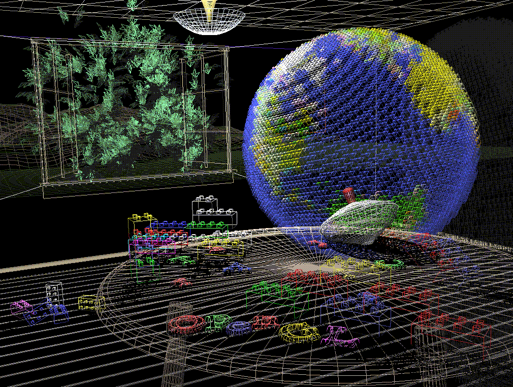
Figure J-1 : Plate 1
Plate 1. The scene from the cover of this book, with the objects rendered as wireframe models. See Chapter 2 .
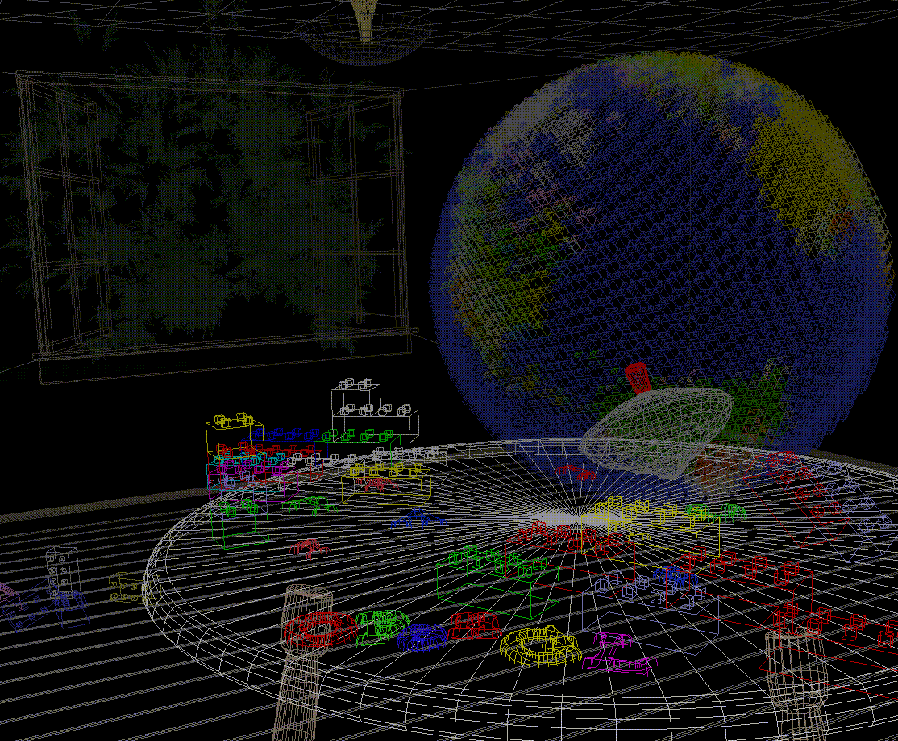
Figure J-2 : Plate 2
Plate 2. The same scene using fog for depth-cueing (lines further from the eye are dimmer). See Chapter 7 .
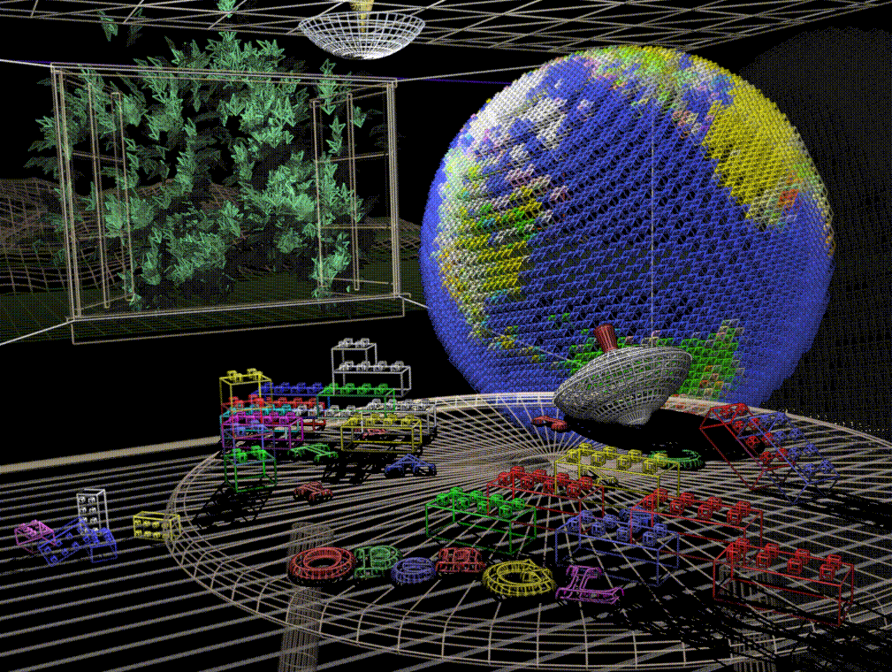
Figure J-3 : Plate 3
Plate 3. The same scene with antialiased lines that smooth the jagged edges. See Chapter 7 .
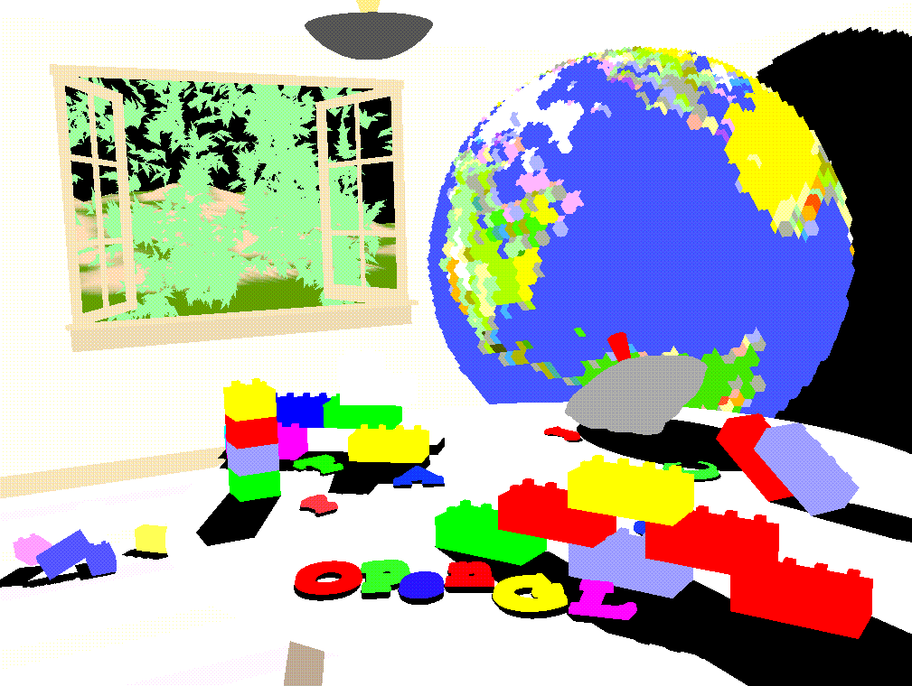
Figure J-4 : Plate 4
Plate 4. The scene drawn with flat-shaded polygons (a single color for each filled polygon). See Chapter 5 .
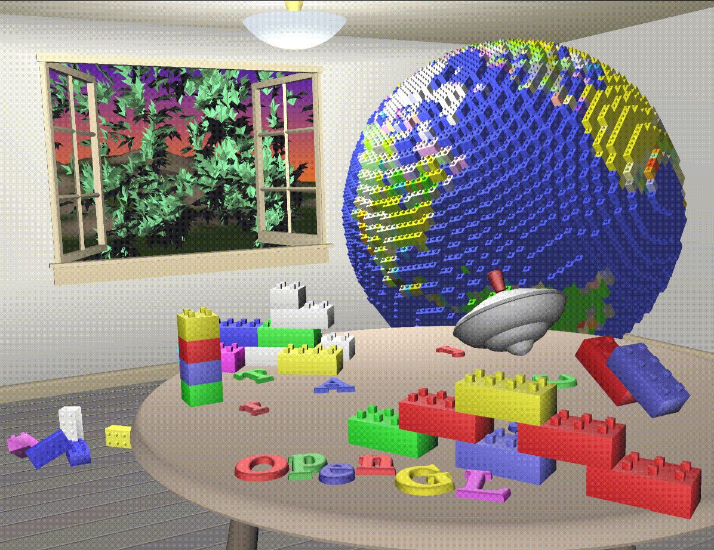
Figure J-5 : Plate 5
Plate 5. The scene rendered with lighting and smooth-shaded polygons. See Chapter 5 and Chapter 6 .
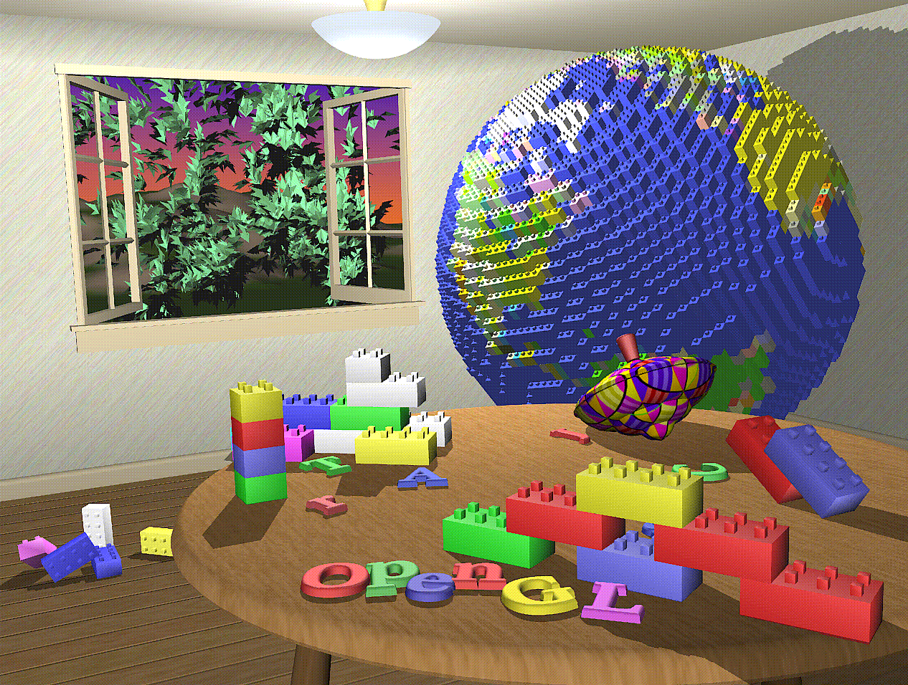
Figure J-6 : Plate 6
Plate 6. The scene with texture maps and shadows added. See Chapter 9 and Chapter 13 .
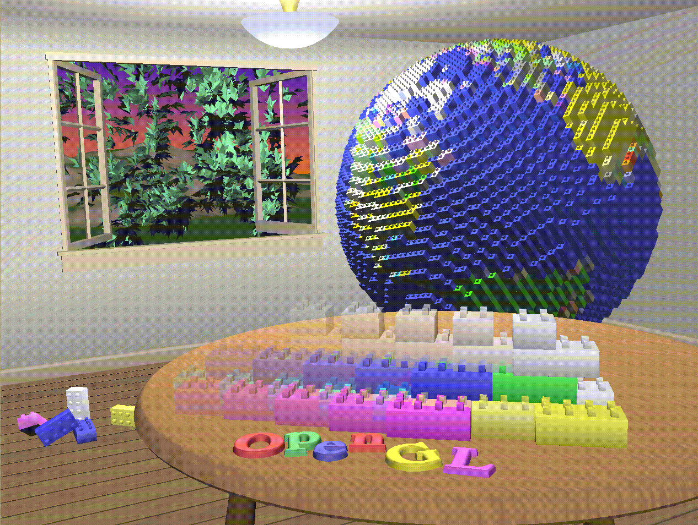
Figure J-7 : Plate 7
Plate 7. The scene drawn with one of the objects motion-blurred. The accumulation buffer is used to compose the sequence of images needed to blur the moving object. See Chapter 10 .
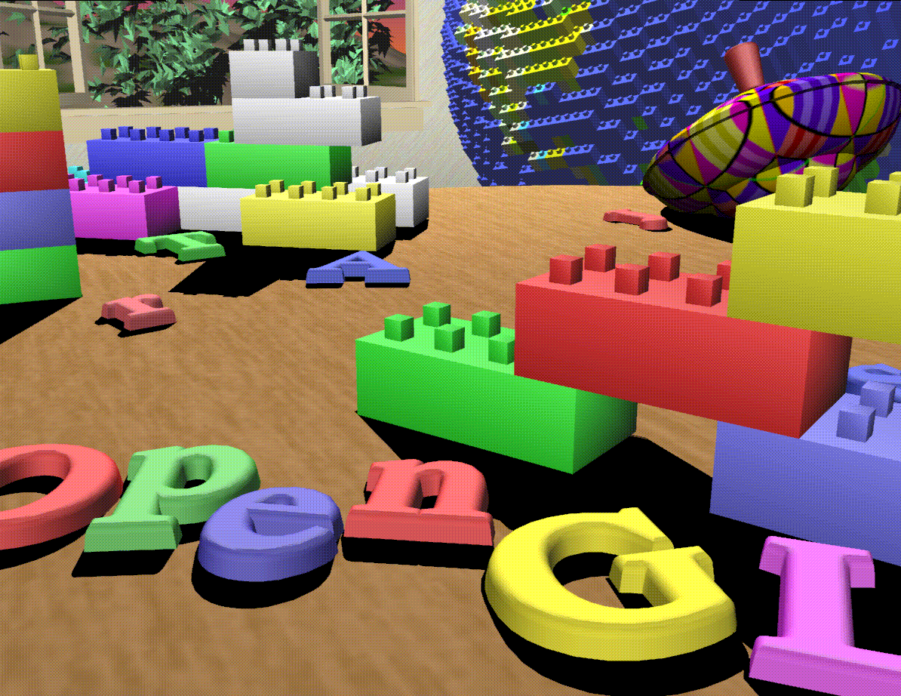
Figure J-8 : Plate 8
Plate 8. A close-up shot - the scene is rendered from a new viewpoint. See Chapter 3 .
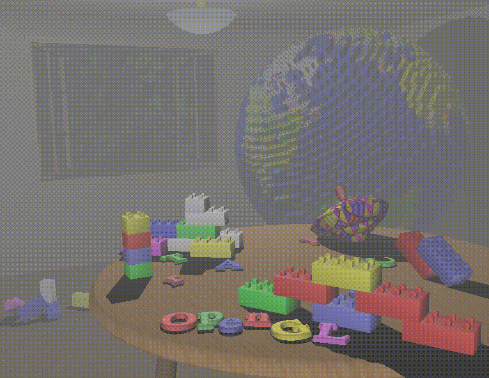
Figure J-9 : Plate 9
Plate 9. The scene drawn using atmospheric effects (fog) to simulate a smoke-filled room. See Chapter 7 .
![[IMAGE]](figures/blur.gif)
Figure J-10 : Plate 10
Plate 10. Teapots drawn with jittered viewing volumes into the accumulation buffer for a depth-of-field effect. The gold teapot is in sharpest focus. See Chapter 10 .
![[IMAGE]](figures/smooth.gif)
Figure J-11 : Plate 11
Plate 11. A smooth-shaded triangle. The three vertices at the corners are drawn in red, green, and blue; the rest of the triangle is smoothly shaded between these three colors. See Chapter 5 .
![[IMAGE]](figures/color1.gif)
Figure J-12 : Plate 12a
![[IMAGE]](figures/color2.gif)
Figure J-13 : Plate 12b
Plate 12. The color cube. (a) The red, green, and blue axes are shown; (b) The axes denote yellow, cyan, and magenta. See Chapter 5 .
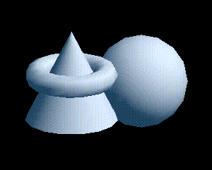
Figure J-14 : Plate 13a
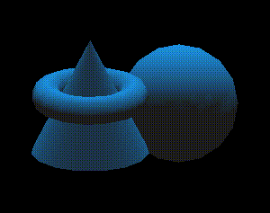
Figure J-15 : Plate 13b
![[IMAGE]](figures/lightinf.gif)
Figure J-16 : Plate 13c
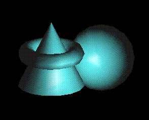
Figure J-17 : Plate 13d
Plate 13. Objects drawn with gray material parameters and colored light sources. (a) This scene has pale blue ambient light and a white diffuse light source. (b) This scene has a pale blue diffuse light source and almost no ambient light. (c) An infinite light source is used; (d) A local light source is used. With the infinite light source, the highlight (specular reflection) is centered on both the cone and the sphere because the angle between the object and the line of sight is ignored. With a local light source, the angle is taken into account, so the highlights are located appropriately on both objects. See Chapter 6 .
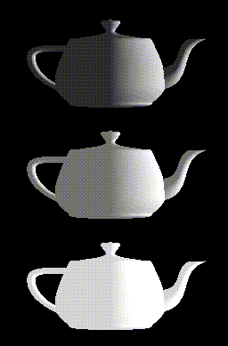
Figure J-18 : Plate 14a
![[IMAGE]](figures/cliptea.gif)
Figure J-19 : Plate 14b
Plate 14. Gray teapots drawn with different lighting conditions. (a) Each of the three teapots is drawn with increasing ambient light. (b) The teapots are clipped to expose their interiors. The top teapot uses one-sided lighting, the middle one uses two-sided lighting with the same material for both front and back faces, and the bottom teapot uses two-sided lighting and different materials for the front and back faces. See Chapter 6 .
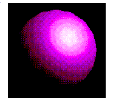
Figure J-20 : Plate 15
Plate 15. A lighted sphere drawn using color index mode. See Chapter 6 .
![[IMAGE]](figures/spheres.gif)
Figure J-21 : Plate 16
Plate 16. Twelve spheres, each with different material parameters. The row properties are as follows: row 1 - No ambient reflection; row 2 - Grey ambient reflection; row 3 - Blue ambient reflection. The first column uses a blue diffuse material color with no specular properties. The second column adds white specular reflection with a low shininess exponent. The third column uses a high shininess exponent and thus has a more concentrated highlight. The fourth column uses the blue diffuse color and, instead of specular reflection, adds an emissive component. See Chapter 6 .
![[IMAGE]](figures/teapots.gif)
Figure J-22 : Plate 17
Plate 17. Lighted, smooth-shaded teapots drawn with different material properties that approximate real materials. The first column has materials that resemble (from top to bottom) emerald, jade, obsidian, pearl, ruby, and turquoise. The second column resembles brass, bronze, chrome, copper, gold, and silver. The third column represents various colors of plastic: black, cyan, green, red, white, and yellow. The fourth column is drawn with similar colors of rubber. See Chapter 6 .
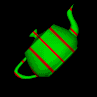
Figure J-23 : Plate 18a
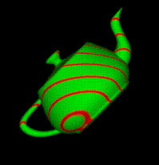
Figure J-24 : Plate 18b
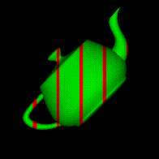
Figure J-25 : Plate 18c
Plate 18. Lighted, green teapots drawn using automatic texture-coordinate generation and a red contour texture map. (a) The texture contour stripes are parallel to the plane x = 0, relative to the transformed object (that is, using GL_OBJECT_LINEAR). As the object moves, the texture appears to be attached to it. (b) A different planar equation (x + y + z = 0) is used, so the stripes have a different orientation. (c) The texture coordinates are calculated relative to eye coordinates and hence aren't fixed to the object (GL_EYE_LINEAR). As the object moves, it appears to "swim" through the texture. See Chapter 9 .
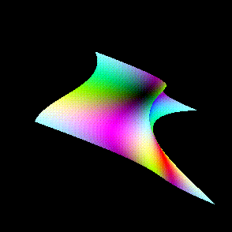
Figure J-26 : Plate 19
Plate 19. A texture-mapped Bezier surface mesh created using evaluators. See Chapter 9 and Chapter 11 .
![[IMAGE]](figures/mipmap.gif)
Figure J-27 : Plate 20
Plate 20. A single polygon drawn using a set of mipmapped textures. In this case, each texture is simply a different color. The polygon is actually a rectangle oriented so that it recedes into the distance, appearing to become progressively smaller. As the visible area of the polygon becomes smaller, correspondingly smaller mipmaps are used. See Chapter 9 .
![[IMAGE]](figures/plate21a.gif)
Figure J-28 : Plate 21a
![[IMAGE]](figures/environ.gif)
Figure J-29 : Plate 21b
Plate 21. An environment-mapped object. In (a) is the original texture, a processed photograph of a coffee shop in Palo Alto, taken with a very wide-angle lens. (b) Is a goblet with the environment map applied; because of the mapping, the goblet appears to reflect the coffee shop off its surface. See Chapter 9 .
![[IMAGE]](figures/jag.gif)
Figure J-30 : Plate 22a
![[IMAGE]](figures/acc.gif)
Figure J-31 : Plate 22b
Plate 22. A scene with several flat-shaded objects. In (a), the scene is aliased. In (b), the accumulation buffer is used for scene antialiasing: the scene is rendered several times, each time jittered less than one pixel, and the images are accumulated and then averaged.See Chapter 10 .
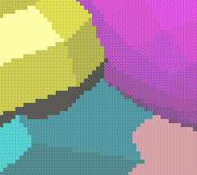
Figure J-32 : Plate 23a
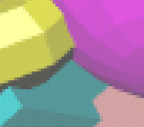
Figure J-33 : Plate 23b
Plate 23. A magnification of the previous scenes. (a) The image shows the aliased, jagged edges. (b) The edges are blurred, or antialiased, and hence less jagged. See Chapter 10 .
![[IMAGE]](figures/art.gif)
Figure J-34 : Plate 24
Plate 24. A scene drawn with texture mapping, lighting, and shadows. The paintings, floor, ceiling, and benches are texture-mapped. Note the use of spotlights and shadows. See Chapter 6 , Chapter 9 , and Chapter 13 .
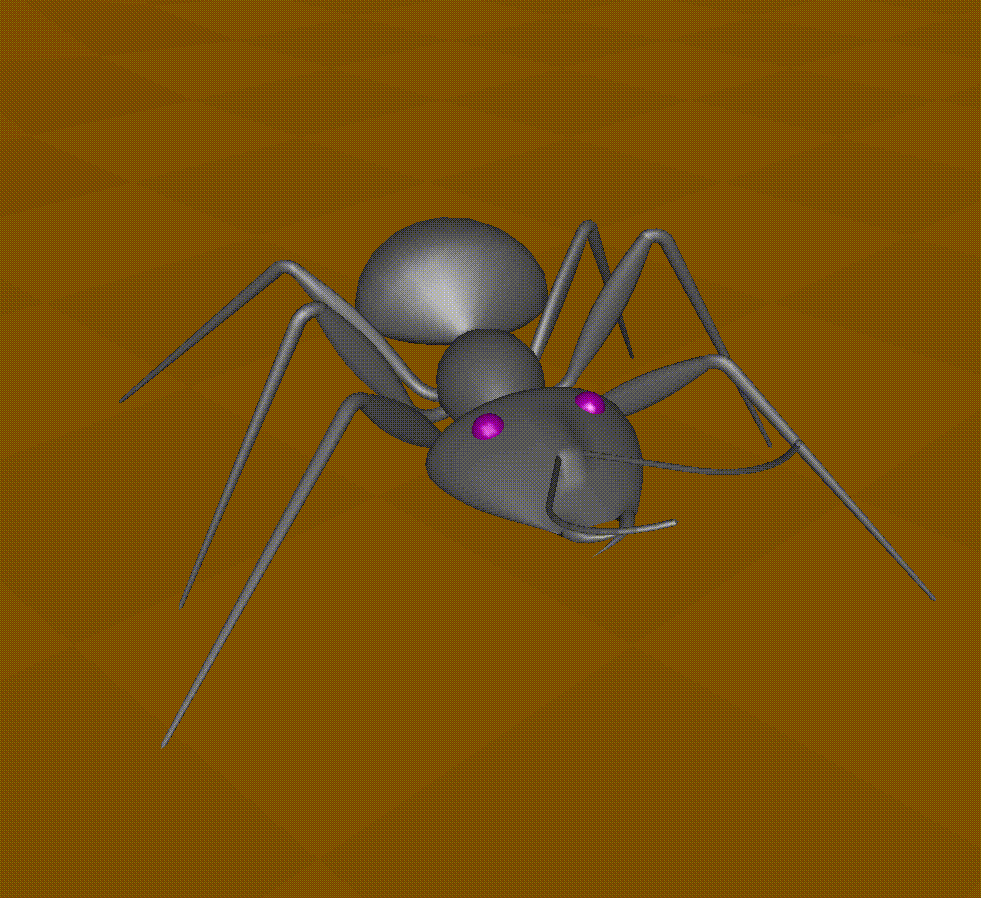
Figure J-35 : Plate 25
Plate 25. A lighted, smooth-shaded model on a texture-mapped surface. See Chapter 5 , Chapter 6 , and Chapter 9 .
![[IMAGE]](figures/iris.gif)
Figure J-36 : Plate 26
Plate 26. A dramatically lit and shadowed scene, with most of the surfaces textured. The iris is a polygonal model. See Chapter 2 , Chapter 6 , Chapter 9 , and Chapter 13 .
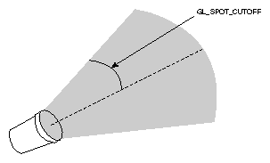
Figure J-37 : Plate 27
Plate 27. Sophisticated use of texturing. All surfaces are texture-mapped. In addition, the attenuated spotlight effect is created using a projected texture. See Chapter 9 and Chapter 13 .
![[IMAGE]](figures/plate28.gif)
Figure J-38 : Plate 28
Plate 28. Lit, smooth-shaded three-dimensional font. The font is created by extruding a two-dimensional shape along a specified axis. See Chapter 2 , Chapter 5 , and Chapter 6 .
![[IMAGE]](figures/village.gif)
Figure J-39 : Plate 29
![[IMAGE]](figures/village1.gif)
Figure J-40 : Plate 30
Plates 29 and 30. Two scenes snapped from a visual simulation program. The hills are composed of just a few polygons, but all the polygons are texture-mapped. Similarly, the buildings are composed of only a few textured rectangular walls. See Chapter 2 , Chapter 3 , and Chapter 9 .
![[IMAGE]](figures/skyfly.gif)
Figure J-41 : Plate 31
Plate 31. Another scene from a different visual simulation program. The hills are textured, and the scene is rendered with fog. The airplanes, obviously, are polygonal. See Chapter 2 , Chapter 3 , Chapter 7 , and Chapter 9 .